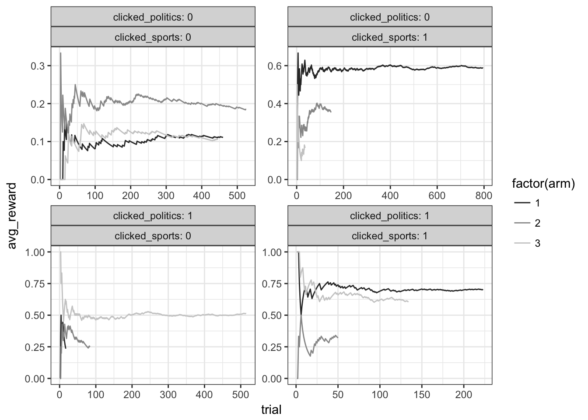

Contextual Bandits: LinUCB
Fri, Mar 17, 2017
I’ve been interested in contextual bandit algorithms lately so I thought I would document my experience as I explore the literature.
The Situation
First, I will talk about the LinUCB algorithm with linear disjoint models, following Li et al. (2010). I’m starting with this paper because it is the most cited paper on contextual bandits and I found it (sort of) easy to understand.
In this paper, the authors focus on choosing which articles to put on the homepage of a site. Say, for example, they had 3 articles but only space for 1, they could use the LinUCB algorithm to find which of the articles is best. More interestingly, if they had some features about their users–say if they had clicked on a sports article in the past or if they had clicked on a politics article in the past–the algorithm can take that into account and find which articles are best for people given their past click behaviors.
The family of UCB (upper confidence bound) algorithms have been well described in lots of places so I won’t spend time explaining those. You can read about them here and here. However, we will make two assumptions: first, our observations are i.i.d. and second, the arms are independent.
Simulating Data
I’ll start by simulating data for this situation:
library(dplyr)
library(broom)
library(MASS)
library(ggplot2)
library(purrr)
library(tidyr)
library(knitr)
# set number of observations
n <- 10000
# make this reproducible
set.seed(7)
# simulate some data!
bandit_data <- data_frame(
clicked_sports = sample(c(0,1), n, prob = c(0.6, 0.4), replace = T),
clicked_politics = sample(c(0,1), n, prob = c(0.7, 0.3), replace = T),
arm = sample(c(1:3), n, replace = T),
sports_coef = case_when(arm == 1 ~ .5,
arm == 2 ~ .1,
arm == 3 ~ .1),
politics_coef = case_when(arm == 1 ~ .1,
arm == 2 ~ .1,
arm == 3 ~ .4),
arm_baseline = case_when(arm == 1 ~ .1,
arm == 2 ~ .2,
arm == 3 ~ .1),
rand_draw = runif(n)
) %>%
mutate(click_factor = arm_baseline + sports_coef * clicked_sports + politics_coef * clicked_politics) %>%
mutate(click = ifelse(click_factor >= rand_draw, 1, 0))Let’s make sure that is doing what we want it to:
bandit_data %>%
group_by(arm, clicked_sports, clicked_politics) %>%
summarise(ct = n(), reward = sum(click), mean_clk_rt = mean(click)) %>%
group_by(clicked_sports, clicked_politics) %>%
filter(mean_clk_rt == max(mean_clk_rt)) %>%
kable()| arm | clicked_sports | clicked_politics | ct | reward | mean_clk_rt |
|---|---|---|---|---|---|
| 1 | 1 | 0 | 963 | 560 | 0.5815161 |
| 1 | 1 | 1 | 392 | 271 | 0.6913265 |
| 2 | 0 | 0 | 1450 | 286 | 0.1972414 |
| 3 | 0 | 1 | 606 | 310 | 0.5115512 |
So, we can see from this that arm 2 is best for people who clicked nothing, arm 3 is best when they clicked politics, and arm 1 is best when they clicked sports or if they clicked both. Let’s see if the LinUCB can figure this out!
The Algorithm
Roughly, this is how the algorithm works: at each step, we run a linear regression with the data we have collected so far such that we have a coefficient for clicked_sports and clicked_politics. We then observe our new context (in this case the clicked_sports and clicked_politics variables), and generate a predicted payoff using our model. We also generate a confidence interval for that predicted payoff (i.e. click through rate) for each of the three arms. We then choose the arm with the highest upper confidence bound.
Definitions
To explain the details we need a few definitions:
\(d\) is the number of features. In our case our features are clicked_politics and clicked_sports so \(d = 2\).
\(m\) is the number of observations (in this case users) we have.
\(\mathbf{D}_a\) is the \(m \times d\) design matrix containing observations of our 2 variables for arm \(a\). It will look something like this:
\[\begin{pmatrix} 1 & 1\\ 0 & 1\\ 1 & 0\\ 0 & 0\\ \vdots & \vdots \end{pmatrix}\]
- \(\mathbf{c}_a\) is the vector of length \(m\) for arm \(a\) containing 1 if someone clicked and 0 otherwise. It could look like this:
\[\begin{pmatrix} 1\\ 0\\ 1\\ 0\\ \vdots \end{pmatrix}\]
- \(\hat{\boldsymbol\theta}_a\) is the vector of length 2 of coefficients we obtain from applying ridge regression to \(\mathbf{D}_a\) and \(\mathbf{c}_a\). The math for ridge regression is just like normal linear regression but with the \({\mathbf{I}_d}\) added:
\[\hat{\boldsymbol\theta}_a = \underbrace{(\mathbf{D}_a ^\intercal \mathbf{D}_a + \mathbf{I}_d)^{-1}\mathbf{D}_a ^\intercal\mathbf{c}_a}_\text{ridge regression}\]
Following the authors and for convenience we will say that \(\mathbf{A}_a = \mathbf{D}_a ^\intercal \mathbf{D}_a + \mathbf{I}_d\)
\(\mathbf{x}_{t,a}\) is a vector of length \(d\) and is the context arm \(a\) at time \(t\). In other words, it is one observation of our two variables–or a single row of \(\mathbf{D}_a\). So this could be the following or some other combination of 0 and 1:
\[\begin{pmatrix} 1\\ 0\\ \end{pmatrix}\]
- Lastly, the crux of this algorithm: the arm we choose at each time (\(a_t\)) is found by calculating which arm gives the largest predicted payoff from our ridge regression for our currently observed context (given by \(\mathbf{x}_{t,a}^\intercal\hat{\boldsymbol\theta}_a\)) plus \(\alpha\) times the standard deviation of the expected payoff. The variance of the payoff is given by \(\mathbf{x}_{t,a}^\intercal{\mathbf{A}_a}^{-1}\mathbf{x}_{t,a}\), so the standard deviation is just the square root of that:
\[a_t = {argmax}_{a \in A_t} \Big( \underbrace{\mathbf{x}_{t,a}^\intercal\hat{\boldsymbol\theta}_a}_\text{predicted payoff} + {\alpha}\underbrace{\sqrt{\mathbf{x}_{t,a}^\intercal{\mathbf{A}_a}^{-1}\mathbf{x}_{t,a}}}_\text{standard deviation of payoff} \Big)\]
\({r_t}\) is the payoff (clicked or didn’t) we observe after we choose an arm in time \(t\).
\(\mathbf{b}_a\) is a vector of length \(d\) that can be thought of as the \(\mathbf{D}_a ^\intercal\mathbf{c}_a\) part of the ridge regression. We update it in every time period \(t\) of the algorithm by by adding \(r_t \mathbf{x}_{t,a_a}\) to it.
Putting It Together
Now that we have defined all the pieces we need, let’s put them together as the LinUCB algorithm:
- Set \(\alpha\)
- Loop through every time period \(t\) doing the following:
- Observe the context (\(\mathbf{x}_{t,a}\)) and arms (\(a_t\)).
- Loop through each arm doing this:
- If the arm hasn’t been seen yet:
- Instantiate \(\mathbf{A}_a\) as a \(d \times d\) identity matrix.
- Instantiate \(\mathbf{b}_a\) as a 0 vector of length \(d\).
- Set \(\hat{\boldsymbol\theta}_a = \mathbf{A}_a^{-1}\mathbf{b}_a\) (because remember that \(\mathbf{A}_a\) is the first part of the ridge regression and \(\mathbf{b}_a\) is the online variant of the second part).
- Find the expected payoff \(p_{t,a} = \mathbf{x}_{t,a}^\intercal\hat{\boldsymbol\theta}_a + {\alpha}\sqrt{\mathbf{x}_{t,a}^\intercal{\mathbf{A}_a}^{-1}\mathbf{x}_{t,a}}\)
- If the arm hasn’t been seen yet:
- End the arm loop.
- Choose the arm with the biggest \(p_{t,a}\) (if there is a tie pick randomly among the winners).
- Observe whether or not the user clicked: \(r_t\).
- Update \(\mathbf{A}_{a_t}\) by adding \(\mathbf{x}_{t,a_a} \mathbf{x}_{t,a_a}^{\intercal}\) to it.
- Update \(\mathbf{b}_a\) by adding \({r_t} \mathbf{x}_{t,a_a}\) to it.
- End the time period loop.
This is simpler than it probably looks: in every time period, we find the upper end the confidence interval of the payoff for each arm, and we pick the arm with the highest one!
How it Looks in R
First, we need to set a parameter \(\alpha\) to control how much exploration should happen vs. exploitation of the current best arm. For now I’m just arbitrarily choosing 7–ideally we would run simulations to determine the best value for this.
alpha = 7Now we’ll need some functions:
library(MASS)
# this function returns the ucb estimates or p_t_a from above
inside_for_func <- function(inverse_cov_matrix, reward_vector_times_design_matrix, context_vector, alpha){
theta_hat <- inverse_cov_matrix %*% reward_vector_times_design_matrix
ucb_estimate <- t(theta_hat) %*% context_vector +
alpha * sqrt(t(context_vector) %*% inverse_cov_matrix %*% context_vector)
return(ucb_estimate)
}
# This function updates the covariate matrix
update_cov_matrix <- function(cov_matrix, context_vector){
return(cov_matrix + context_vector %*% t(context_vector))
}
# this one updates b_a from above
update_reward_vector_times_design_matrix <- function(reward_vector_times_design_matrix, reward, context_vector){
return(reward_vector_times_design_matrix + reward * context_vector)
}We need to give the algorithm some info and instantiate some objects:
arms <- c(1:3)
d <- 2
arm_choice <- c()
cov_matrix <- list()
reward_vector_times_design_matrix <- list() # this corresponds to b_a above
ucb_estimate <- matrix(0, n, length(arms))Now we should be ready! We can run this bandit algorithm on the fake data we created above by only keeping an observation when the bandit agrees on the arm choice of the randomized arm choices I set up in the initial dataset. This is actually a really simple technique one can use for training a contextual bandit before deploying it in production.
The following is not written for efficiency–I’m trying to make it look as similar to the pseudocode as possible for readability.
for (t in 1:n){
context <- bandit_data[t,]
for (a in arms){
if(t == 1){
cov_matrix[[a]] <- diag(d)
reward_vector_times_design_matrix[[a]] <- rep(0, d)
}
inverse_cov_matrix <- ginv(cov_matrix[[a]])
ucb_estimate[t, a] <- inside_for_func(inverse_cov_matrix,
as.matrix(reward_vector_times_design_matrix[[a]]),
as.matrix(c(context$clicked_sports, context$clicked_politics)),
alpha)
}
trial_arm <- which(ucb_estimate[t,] == max(ucb_estimate[t,]))
if(length(trial_arm) > 1){
trial_arm <- sample(trial_arm, 1)
}
if(trial_arm == context$arm){
arm_choice[t] <- trial_arm
}else{
arm_choice[t] <- t*10 # need to do this so I can filter out unused observations from bandit dataset
next
}
cov_matrix[[arm_choice[t]]] <- update_cov_matrix(cov_matrix[[arm_choice[t]]],
as.matrix(c(context$clicked_sports, context$clicked_politics)))
reward_vector_times_design_matrix[[arm_choice[t]]] <- update_reward_vector_times_design_matrix(
as.matrix(reward_vector_times_design_matrix[[arm_choice[t]]]),
context$click,
as.matrix(c(context$clicked_sports, context$clicked_politics))
)
}Diagnostics
How did our bandit do? Well, let’s see what we get for our coefficients when we just run a linear regression for each arm on our initial full dataset and compare that to what the bandit calculated:
bandit_data$arm_choice <- arm_choice
# create a function to apply to the list columns of the bandit data
lm_fun <- function(data){
return(tidy(summary(lm(click ~ 0 + clicked_sports + clicked_politics, data))))
}
# apply the lm function to each arm's data from the original dataset
bandit_data %>%
nest(-arm) %>%
mutate(model = map(data, lm_fun)) %>%
unnest(model) %>%
dplyr::select(arm, term, data_estimate = estimate) %>%
arrange(arm) -> coefficients_from_data
# calculate the coefficients for each of the arms using the bandit data
map_df(arms, function(i) data_frame(arm = i, term = c("clicked_sports", "clicked_politics"), bandit_estimate = as.vector(ginv(cov_matrix[[i]]) %*% reward_vector_times_design_matrix[[i]]))) -> coefficients_from_bandit
# join them together and see how different they are
coefficients_from_data %>%
inner_join(coefficients_from_bandit, by = c("arm", "term")) %>%
mutate(percent_difference = 100*((bandit_estimate - data_estimate)/data_estimate)) -> estimate_datakable(estimate_data)| arm | term | data_estimate | bandit_estimate | percent_difference |
|---|---|---|---|---|
| 1 | clicked_sports | 0.5667846 | 0.5837239 | 2.988670 |
| 1 | clicked_politics | 0.1607319 | 0.1237742 | -22.993414 |
| 2 | clicked_sports | 0.2690057 | 0.3025175 | 12.457671 |
| 2 | clicked_politics | 0.2385999 | 0.1620305 | -32.091124 |
| 3 | clicked_sports | 0.1769809 | 0.1107367 | -37.430104 |
| 3 | clicked_politics | 0.4658418 | 0.5079404 | 9.037109 |
They look close-ish. It looks like the bandit is doing what it is supposed to: it gets the coefficients mostly correct for the good arms but learns less about the bad arms. That makes sense because it should try the bad ones less than any of the others. However, it looks like it hardly tried some of them at all which could be a bad thing. We may need to increase the value of alpha or set things up so the algorithm tries every option several times before it begins the convergence process. Now let’s see what the average reward was over time:
bandit_data %>%
filter(arm_choice < 10) %>%
group_by(clicked_sports, clicked_politics, arm_choice) %>%
mutate(total_reward = cumsum(click), trial = c(1:n())) %>%
mutate(avg_reward = total_reward/trial) %>%
ggplot(aes(x = trial, y = avg_reward, color = factor(arm), group = factor(arm))) +
geom_path() +
facet_wrap(~clicked_politics + clicked_sports, scales = "free", labeller = "label_both") +
theme_bw() +
scale_colour_grey()
As you can see, the algorithm eventually ends up giving an average reward close to the above coefficients from the original data. It stops trying arms that are clearly worse fairly quickly and takes longer in less obvious cases such as when users neither clicked on politics nor sports. In those cases it needs more data to be confident.
Conclusions and Next Steps
We’ve seen now how the LinUCB algorithm with linear disjoint models works. I hope I have helped make the ideas around this algorithm and its implementation easier to understand. If I haven’t and you need clarification leave a comment. Also, please let me know if you see any errors. I hope to continue these posts, the next one being the later part of this same paper–the hybrid LinUCB algorithm in which the authors allow arms to share contextual variables. After that I’m not sure which paper I will tackle–but I’m open to suggestions.
References
Li, Lihong, Wei Chu, John Langford, and Robert E Schapire. 2010. “A Contextual-Bandit Approach to Personalized News Article Recommendation.” In Proceedings of the 19th International Conference on World Wide Web, 661–70. ACM.